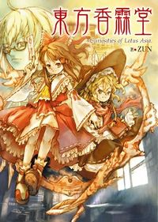

- Welcome to Touhou Wiki!
- Please register to edit. For assistance, check in with our Discord server or IRC channel.
Curiosities of Lotus Asia
| 東方香霖堂 Curiosities of Lotus Asia | |
|---|---|
|
 | |
| Publisher | |
| Released |
September 30, 2010 |
| Writers | |
| Illustrators | |
| Pages |
206 |
| Chapters |
27 |
| ISBN | |
Touhou
Each story is told from the perspective of Rinnosuke Morichika, proprietor of the curio store Kourindou. Naturally, he has a lot of well-known "customers" in the store, especially Reimu Hakurei and Marisa Kirisame.
A hardcover anthology edition was released on September 30, 2010 by ASCII Media Works.
During an interview with Dengeki Online in 2015[1], it was confirmed that Curiosities of Lotus Asia would continue its serialization in the Touhou Official Magazine Strange Creators of Outer World.
The preview for the series is here.
Compiled Stories[edit]
Below are the contents of the 2010 anthology, including the pages of all stories within the book and their original source and publication date. Dates are courtesy of the Japanese Touhou Wiki.
- pg. 001: Cover
- pg. 003: Aphorism - added only on hardcover publication
- pg. 005: Index
- pg. 006: Chapter 1: Gensokyo's Shrine Maiden and the Fifteen Fascinating Books — Part 1 - released 2004-01-05 (Colorful PUREGIRL, February 2004)
- pg. 012: Chapter 2: Gensokyo's Shrine Maiden and the Fifteen Fascinating Books — Part 2 - released 2004-02-03 (Colorful PUREGIRL, March 2004)
- pg. 018: Chapter 3: Illusionary Bird - released 2004-03-03 (Colorful PUREGIRL, April 2004)
- pg. 024: Chapter 4: Complete and Elegant Tea Time — Part 1 - released 2004-04-03 (Colorful PUREGIRL, May 2004)
- pg. 029: Chapter 5: Complete and Elegant Tea Time — Part 2 - released 2004-05-01 (Colorful PUREGIRL, June 2004)
- pg. 034: Chapter 6: Furnace of Drizzle — Part 1[2] - released 2004-06-03 (Colorful PUREGIRL, July 2004)
- pg. 039: Chapter 7: Furnace of Drizzle — Part 2[2] - released 2004-07-03 (Colorful PUREGIRL, August 2004)
- pg. 044: Chapter 8: Summer Drizzle Hall — Part 1[2] - released 2004-08-03 (Colorful PUREGIRL, September 2004)
- pg. 049: Chapter 9: Summer Drizzle Hall — Part 2[2] - released 2004-09-03 (Colorful PUREGIRL, October 2004)
- pg. 055: Chapter 10: Higan Flowers of Muenzuka - released 2004-10-29 (Magazine Elfics vol. 001)
- pg. 064: Chapter 11: Purple-transcending Light - released 2004-12-17 (Magazine Elfics vol. 002)
- pg. 073: Chapter 12: Deity's Tool - released 2004-12-25 (contribution for a doujinshi "Ryousaishii 2")
- pg. 079: Chapter 13: Phantasmal Light, Snow on the Window - released 2005-02-25 (Magazine Elfics 2 vol. 003)
- pg. 089: Chapter 14: Colorless Sakura - released 2005-04-26 (Magazine Elfics 2 vol. 004)
- pg. 098: Chapter 15: A Nameless Stone - released 2005-08-05 (Magazine Elfics 2 vol. 005)
- pg. 107: Chapter 16: Non-Functional Shikigami - released 2005-10-05 (Magazine Elfics 2 vol. 006)
- pg. 116: Chapter 17: Price of Paper at Luoyang - released 2005-12-16 (Elnavi)
- pg. 124: Chapter 18: Moon and Kappa - released 2006-02-10 (Elnavi)
- pg. 132: Chapter 19: Dragon's Camera - released 2006-06-26 (Dengeki Moeou, August 2006)
- pg. 142: Chapter 20: Miraculous Cicada - released 2006-08-26 (Dengeki Moeou, October 2006)
- pg. 150: Chapter 21: The Graceful Reward from God - released 2006-10-26 (Dengeki Moeou, December 2006)
- pg. 158: Chapter 22: The Universe the Youkai Saw - released 2006-12-26 (Dengeki Moeou, February 2007)
- pg. 167: Chapter 23: The Contagious God - released 2007-02-26 (Dengeki Moeou, April 2007)
- pg. 175: Chapter 24: The Charming Moon - released 2007-04-26 (Dengeki Moeou, June 2007)
- pg. 183: Chapter 25: Blessings of the Shrine - released 2007-06-26 (Dengeki Moeou, August 2007)
- pg. 191: Chapter 26: The Night the Storm Clouds Rolled In - released 2007-08-25 (Dengeki Moeou, October 2007)
- pg. 198: Chapter 27: Mechanism of Fortune - released 2007-10-26 (Dengeki Moeou, December 2007)
- pg. 206: Afterword
Uncompiled Stories[edit]
In 2015 this series was restarted in the pages of Strange Creators of Outer World. These stories have yet to be compiled in hardcover format.
- Chapter 28: The Lone & Proud Curio Store - released 2015-09-30 (Strange Creators of Outer World volume 1)
- Chapter 29: An Expert on the Occult - released 2016-06-30 (Strange Creators of Outer World volume 2)
- Chapter 30: The World Where Many Facts Coexist - released 2017-03-02 (Strange Creators of Outer World volume 3)
- Chapter 31: Warm Trap at Woodstove - released 2017-10-31 (Strange Creators of Outer World volume 4)
- Chapter 32: The Free-sprits of Spring, and the Honest Nightmare - released 2018-03-30 (Strange Creators of Outer World volume 2018 Spring!)
- Chapter 33: There Are Three Sumireko Usami! - released 2018-10-01 (Strange Creators of Outer World volume 2018 Autumn!)
- Chapter 34: The Occult Side of Dream Syndrome - released 2019-03-04 (Strange Creators of Outer World volume 2019 Spring!)
Numbering[edit]
The chapter numbers for Curiosities of Lotus Asia have varied between sources.
| Publication | PUREGIRL | Elfics | Ryousaishii 2 | Elnavi | SCoOW | Hardcover |
|---|---|---|---|---|---|---|
| Colorful PUREGIRL | chap. 1 - part 1 | chap. 1 | chap. 1 | |||
| chap. 1 - part 2 | chap. 2 | chap. 2 | ||||
| chap. 2 | chap. 3 | chap. 3 | ||||
| chap. 3 - part 1 | chap. 4 | chap. 4 | ||||
| chap. 3 - part 2 | chap. 5 | chap. 5 | ||||
| chap. 4 - part 1 | chap. 6 | chap. 6 | ||||
| chap. 4 - part 2 | chap. 7 | chap. 7 | ||||
| chap. 5 - part 1 | chap. 8 | chap. 8 | ||||
| chap. 5 - part 2 | chap. 9 | chap. 9 | ||||
| magazine elfics | chap. 1 | chap. 10 | chap. 10 | |||
| chap. 2 | chap. 7 | chap. 11 | chap. 11 | |||
| Ryousaishii 2 | chap. 8[1][3] | chap. 12 | ||||
| magazine elfics | chap. 3 | chap. 12 | chap. 13 | |||
| chap. 4 | chap. 13 | chap. 14 | ||||
| chap. 5 | chap. 14 | chap. 15 | ||||
| chap. 6 | chap. 15 | chap. 16 | ||||
| Elnavi | chap. 16 | chap. 17 | ||||
| chap. 17 | chap. 18 | |||||
| Dengeki Moeoh | chap. 18 | chap. 19 | ||||
| chap. 19 | chap. 20 | |||||
| chap. 20 | chap. 21 | |||||
| chap. 21 | chap. 22 | |||||
| chap. 22 | chap. 23 | |||||
| chap. 23 | chap. 24 | |||||
| chap. 24 | chap. 25 | |||||
| chap. 25 | chap. 26 | |||||
| chap. 26 | chap. 27 | |||||
| Strange Creators of Outer World |
chap. 1 | |||||
| chap. 2 | ||||||
| chap. 3 | ||||||
| chap. 4 | ||||||
| chap. 5 | ||||||
| chap. 6 | ||||||
| chap. 7 | ||||||
^ This chapter was contributed for twirl-lock's doujinshi, "Ryousaishii 2" (霊偲志異2), sold at Comiket 67; prior to the hardcover release its status as part of the official series was unclear, but its rarity led the doujinshi's resale price to skyrocket.